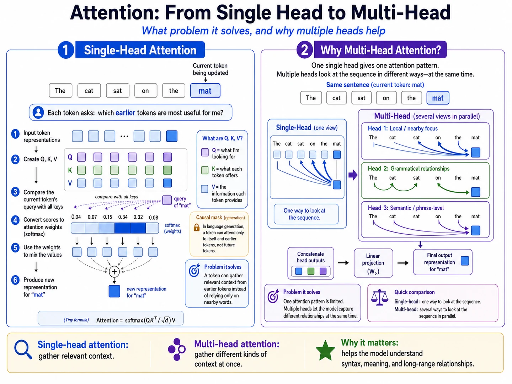

Lesson 20 of 23 · Transformer block
Heads split features, not the sentence.
Your win: track the token and feature axes through independent heads, concatenation, and the output projection.
Every head sees all \(T\) positions
For \(d_{\text{model}}=h\,d_h\), the feature width is reorganized into \(h\) heads:
The \(T\) axis is unchanged. A head is not assigned one word or one sentence segment. Each head forms its own \(T\times T\) attention matrix over the same token sequence.
Choose a query token in either head
Rows fade except the selected query
Numbers substituted: \(T=3,d_{\text{model}}=8,h=2\)
| Quantity | Shape | Meaning |
|---|---|---|
| \(Q,K,V\) before split | \(3\times8\) | Three tokens, eight projected features |
| Each head's \(Q_r,K_r,V_r\) | \(3\times4\) | All three tokens, four head features |
| Each head's \(P_r\) | \(3\times3\) | Every query position compared with every key position |
| Each head's \(O_r=P_rV_r\) | \(3\times4\) | One four-feature output per token |
| \(\operatorname{Concat}(O_1,O_2)\) | \(3\times8\) | Join along the feature axis |
Concatenate, then mix heads
For one token with \(d_{\text{model}}=4,h=2,d_h=2\), suppose the head outputs are \(\mathbf o_1=(1,0.2)\) and \(\mathbf o_2=(-0.5,2)\). Concatenation gives
Use this simple output matrix:
The output projection lets coordinates from different heads contribute to the same model feature while restoring the \(d_{\text{model}}\)-wide representation expected by the residual path.
Code checkpoint · join every head
Attention produced one context tensor per head. Transpose restores token-major order, then reshape concatenates head features before the learned output projection.
Show head recombination
# context begins as [B, H, T, Dh]
context = context.transpose(1, 2).contiguous()
# now [B, T, H, Dh]
context = context.view(batch, tokens, hidden_size)
# now [B, T, H * Dh] = [B, T, D]
attention_output = out_proj(context) # [B, T, D]Trace it: Why must the output projection return width \(D\) before the residual addition?
Retrieval check
With \(T=5,d_{\text{model}}=12,h=3\), what does one head receive?
Practice before moving on
- Calculate \(d_h\) for \(d_{\text{model}}=24,h=6\).
- For \(B=2,T=7,d_{\text{model}}=24,h=6\), give the split Q shape.
- Give one head's score-matrix shape for \(T=7\).
- Concatenate head outputs \((2,-1)\) and \((0,3)\).
- Multiply \((2,-1,0,3)\) by the displayed \(W_O\).
- Correct this statement: “Head 1 reads the first half of the sentence and Head 2 reads the second half.”
Check solutions
- \(d_h=4\).
- \(2\times6\times7\times4\).
- \(7\times7\).
- \((2,-1,0,3)\).
- \((2,-1,2,2)\).
- Both heads read all token positions; their learned projections and feature subspaces differ.
Primary source: Vaswani et al., Section 3.2.2.